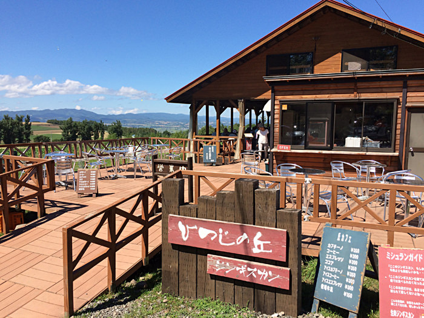
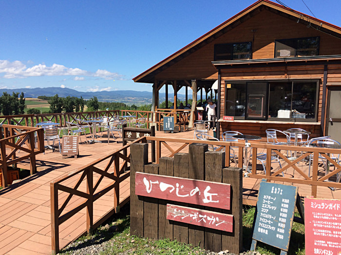

富良野グルメ
ジンギスカン ひつじの丘
 


牧場を併設しているジンギスカンレストラン。
希少で臭みのないサフォーク、脂身少なくやわらかいミルクラム、脂身が少し多く、
ジンギスカン本来の食感が楽しめるホワイトラムの３種類の羊肉が楽しめます。
住所〒071-0711
北海道空知郡中富良野町ベベルイ
Tel: 0167-44-3977｟5/1～9/30｠
Tel: 0167-44-2952｟10/1～4/30｠
Tel: 090-9433-9906《通年》
カーナビMAPコード 349 169 820
詳細情報
ファーム富田 ラベンダーソフトクリーム & メロン


ファーム富田限定のラベンダーエキスの入った香高いソフトクリームと、
きめ細かくジューシーな果肉の富良野メロンをラベンダー畑を眺めながら
楽しめます。
住所〒071-0704
北海道空知郡中富良野町基線北15号
TEL0167 39 3939
詳細情報
ページトップへ戻る